We start by briefly introducing the way finite element matrices are assembled ``on paper''. As usual in finite elements, we take the weak form of the partial differential equation. In the most general case, it reads: find 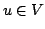 such that
| 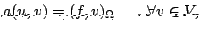 |
In finite elements, we define an approximation of the solution 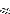 by choosing a finite dimensional subspace 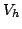 spanned by the basis functions 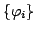, and searching 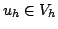 by testing the weak form by the test functions from . The problem then reads: find such that
| 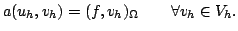 |
Now,
is a basis of . We denote the dimension of by
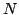, and will henceforth let all sums be over the range
 , to keep
with the standard notation of the C/C++ programming languages. With this, we
can expand the solution
, to keep
with the standard notation of the C/C++ programming languages. With this, we
can expand the solution
 , and by
bilinearity of the form
, the problem above is equivalent to
, and by
bilinearity of the form
, the problem above is equivalent to
| 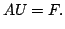 | (2) |
Note that we have taken a reverted order of indices in the definition of 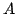, since we want the linear system (2) with the solution to the right of the matrix, to keep with standard notation, instead of to the left as in (1). For symmetric problems, there is no difference, but for non-symmetric ones this is a common source for problems and a rather common trap.
For partial differential equations, the bilinear form used in (1)
involves an integral over the domain  on which the problem is
posed. For example, for the Laplace equation we have
on which the problem is
posed. For example, for the Laplace equation we have
 |
| 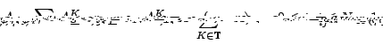 |
In general, assume that there are 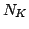 shape functions with support on cell
, and let the set of their indices be denoted by  . Then we can define
a matrix 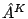 of (small dimension)
. Then we can define
a matrix 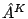 of (small dimension)
 holding these nonzero
entries, and we can obtain back the original contribution 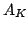 to by the
transformation
holding these nonzero
entries, and we can obtain back the original contribution 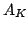 to by the
transformation
 |
In general, when assembling the global matrix, the reverse way is used: when adding up to , we do so only with by
| 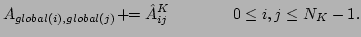 |
The main part of assembling finite element matrices is therefore to assemble the local matrix . Before we go on with discussing how this is done in deal.II, we would like to comment on the evaluation of the integrals involved. Since the integrals are usually too complex to be evaluated exactly (they may depend on coefficients appearing in the equation, or the solution of previous steps in nonlinear or time-dependent problems), they are approximated by quadrature. Assume we have a quadrature formula with 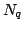 points 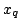 defined on cell in real space (as opposed to the unit cell) and weights 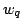. Then, for example for the Laplace equation, we approximate
 det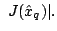 det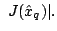 |
(3) |
Since all matrices and right hand side vectors only require knowledge of the values and gradients of shape functions at quadrature points, this is all that deal.II usually provides. One can see this as a kind of view on a finite element, as it only provides a certain perspective on the actual definition of a shape function. Nevertheless, this is entirely sufficient for all purposes of programming finite element programs.
In deal.II the FEValues class does this: you give it a finite element definition, a quadrature formula object, and an object defining the transformation between unit and real cell, and it provides you with the values, gradient, and second derivatives of shape functions at the quadrature points. It also gives access to the determinant of the Jacobian, although only multiplied with as these two are always used in conjunction. It also provides you with many other fields, such as normal vectors to the outer boundary. In practice you do not need them all computed on each cell; thus, you have to specify explicitly in which data you are interested when constructing FEValues objects.
In the following, we provide a list of connections between the symbols introduced above, and the respective functions and variable names used in typical deal.II programs. With this, we will subsequently show the basic structure of an assembly routine. If you have already taken a look at the example programs provided with deal.II, you will recognize all these names. If you haven't, this would be a good time to look at the first three of them.
| system_matrix | |
| cell_matrix | |
| cell | |
| dof_handler.n_dofs() | |
| fe.dofs_per_cell | |
| local_dof_indices | |
| quadrature_formula.n_quadrature_points | |
| 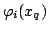 | fe_values.shape_value(i,q) |
|
|
fe_values.shape_grad(i,q) |
| fe_values.quadrature_point(q) | |
|
det |
fe_values.JxW(q) |
With this vocabulary, the typical matrix assembly loop in deal.II has the following form: first declare a quadrature object and use it for the initialization of a FEValues object as discussed above:
QGauss2<2> quadrature_formula;
FEValues<2> fe_values (fe, quadrature_formula,
UpdateFlags(update_values |
update_gradients |
update_JxW_values));
In practice, you may want to use a different set of fields to be updated on
each cell. For example if you do not need the values of shape functions on a
cell, you may omit update_values from the list. Also note that by
default a bi- or tri-linear (depending on space dimension) mapping between
unit and real cell is used. Other mappings are possible, for example quadratic
ones, or a mapping that makes use of the fact that in many cases cells are
actually rectangular, rather than arbitrary quadrilaterals; in order to use
them, another constructor of the FEValues class can be used, which
takes a mapping object as first argument, before the other arguments listed
above.
Next we define abbreviations for the values of and :
const unsigned int
dofs_per_cell = fe.dofs_per_cell,
n_q_points = quadrature_formula.n_quadrature_points;
Then have an object to store the matrix , which is of size
FullMatrix<double> cell_matrix (dofs_per_cell, dofs_per_cell);And an object representing the set of global indices of degrees of freedom, previously denoted by
std::vector<unsigned int> local_dof_indices (dofs_per_cell);The next step is then to loop over all cells:
typename DoFHandler<dim>::active_cell_iterator
cell = dof_handler.begin_active(),
endc = dof_handler.end();
for (; cell!=endc; ++cell)
{
On each cell, first tell the FEValues object to compute the values of
the various fields for this particular cell, and do not forget to reset the
local matrix to zero before adding it up:
fe_values.reinit (cell);
cell_matrix.clear ();
Now comes the main part, assembling the local matrix . It consists
of a loop over all indices
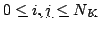 and all quadrature points
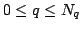, and summing up the contributions. As this is what we will discuss
in detail later on, we only denote it here by an ellipse:
for (unsigned int i=0; i<dofs_per_cell; ++i)
for (unsigned int j=0; j<dofs_per_cell; ++j)
for (unsigned int q=0; q<n_q_points; ++q)
cell_matrix(i,j) += ...;
After we have , we still have to sum it into the global matrix
. This is done by first getting the set
cell->get_dof_indices (local_dof_indices);
for (unsigned int i=0; i<dofs_per_cell; ++i)
for (unsigned int j=0; j<dofs_per_cell; ++j)
system_matrix.add (local_dof_indices[i],
local_dof_indices[j],
cell_matrix(i,j));
};
When this is done, we go on to the next cell.
Within this framework, the only open point is assembling on one quadrature point. This will be subject of the rest of this report.